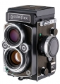

无忌
器材库
全部器材
产品年表
名词百科
榜单
器材库
> 120中幅相机 > Rolleiflex 2.8FX

禄来
Rolleiflex 2.8FX
4.63
综合评分
分类
120中幅相机
点评
0 条
图片
0 张
评测
0 篇
Rollei Rolleiflex 2.8FX，120双镜头反光照相机，带TTL测光和TTL闪光控制。
产品类型
120中幅相机
综合评分
4.63分
无忌评测
暂无评测
规格参数
网友点评
(0)
产品图 / 样片
(0)
评测文章
(0)
规格总览
产品类型
120双镜头反光照相机，带TTL测光和TTL闪光控制
发布日期
2001
标称画幅
6 × 6cm
取景规格
对焦屏
标准配置为裂像微棱对焦屏，可更换
镜头和对焦
镜头卡口
Rollei M
标准镜头
Planar 80/2.8 HFT（视角53°、最近对焦距离1m）
曝光控制
测光系统
两枚SPD测光元件，中央重点加权平均测光，取景器内有5个LED指示
测光范围
3EV~18EV
多重曝光
有
ISO感光度
25-6400
快门
镜间快门
快门速度
B, 1 - 1/500秒
闪灯控制
TTL闪光控制
过片系统
过片
手摇过片兼快门上弦
其它规格
接口
快门线插孔, 三脚架接孔, 闪光同步插孔
机身尺寸
147×109×108mm
机身重量
1275g
该产品暂无存档的网友点评
该产品暂无存档的产品图
评测 / 相关文章
该产品暂无存档的评测文章